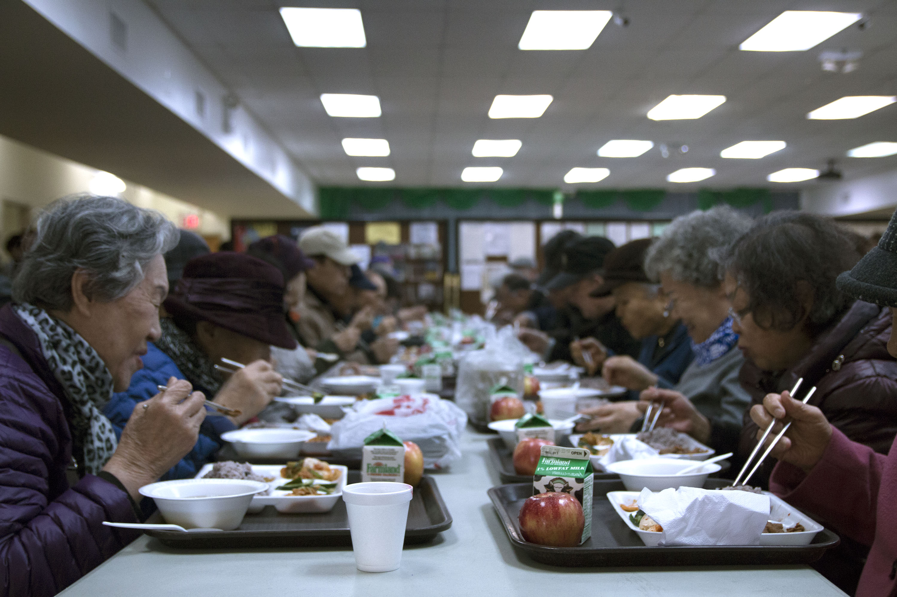
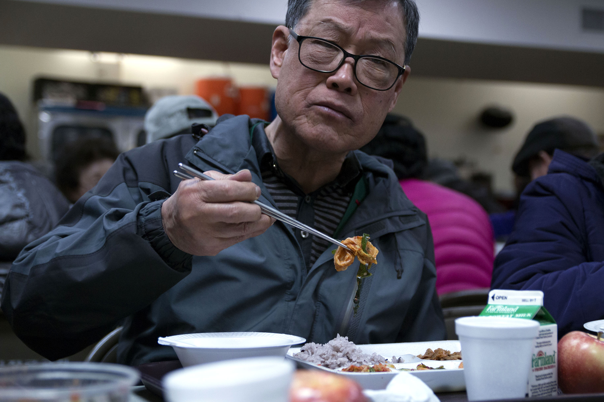
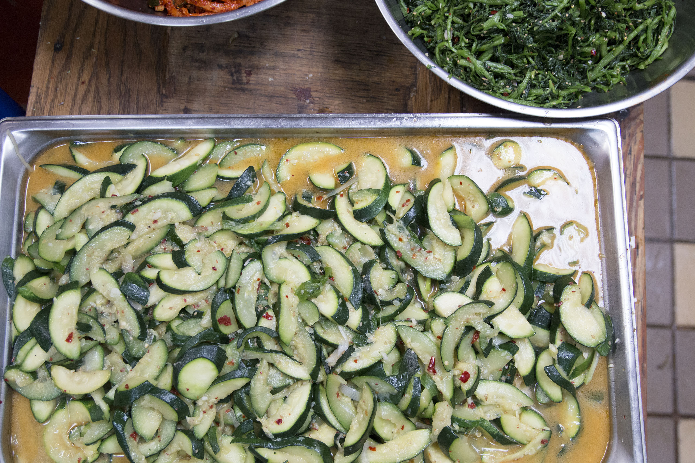
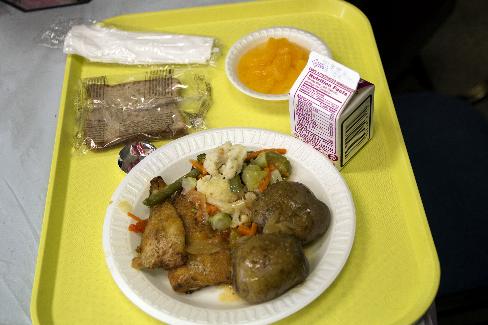

More than 300 Korean seniors travel every weekday to the Korean Senior Center in Flushing. Photo by Sarah Min.

Han-Young Song, 77, started coming to the Korean senior center five years ago. He prefers Korean-style barbeque over Western steak. Photo by Sarah Min.

In the senior center kitchen, tubs of Korean side dishes are prepared for the day's meals. Photo by Sarah Min.


At Christopher Blenman, baked fish with Creole seasoning and boiled potatoes and Italian blend vegetables is on the menu for lunch. May 18, 2018. Photo by Shari Straker.